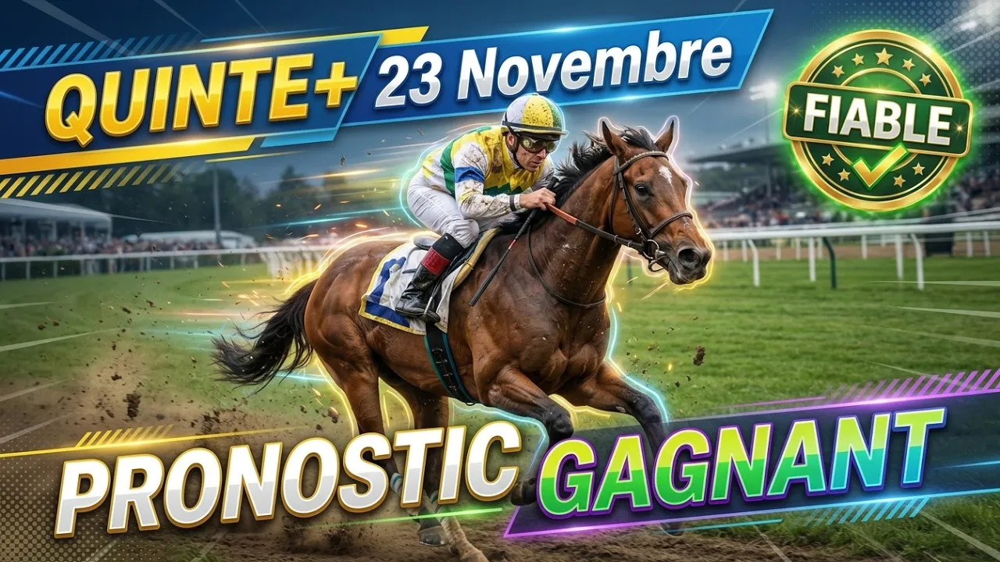

Le Prix de Bretagne s'est joué, le meeting d'hiver est lancé, et déjà Vincennes referme ses portes avant de les rouvrir vingt heures plus tard. Parce qu'ici, pas de répit. Le lundi a son quinté, et ce lundi 23 novembre, à 13h55 précises, dix-sept trotteurs vont s'aligner sur les 2 700 mètres de la grande piste pour une épreuve qui n'a pas le glamour d'un Groupe, mais qui, sur le papier, vaut tous les pièges de la province : le Prix de Montignac-Charente, Course A européenne, dotée de 90 000 euros. Des chevaux de 6 à 10 ans, entre 130 000 et 450 000 euros de gains. Autrement dit, une course de plafonnés, où celui qui a bien joué son calendrier part avec un avantage qu'aucun chronomètre ne mesure.
Alors regardons la course. Pas les gros titres, les chiffres.
Six victoires et un accessit d'honneur en neuf sorties sur le parcours du jour. Ce n'est pas une statistique, c'est une carte d'identité. Ce hongre de 6 ans, entraîné par Louis-Clément Abrivard et piloté par Alexandre Abrivard, vient de préparer cette épreuve dans le Prix des Cévennes - délibérément. Son entraîneur le dit sans détour : avec ses gains et son statut de hongre, les engagements favorables sont rares. Celui de lundi, il l'attend depuis des semaines. Et il y a ce détail : aux Cévennes, il courait ferré, en préparation. Lundi, il est déferré. Tout indique que l'écurie Abrivard a calé sa saison sur cette course-là.
S'il reste sage au départ, il sera très difficile à battre. Et c'est le seul si qu'on lui accordera, parce que sa musique récente contient deux rappels à l'ordre - un 0, un 8 - qui rappellent qu'aucun favori ne court à distance de sécurité.
Philippe Lelièvre à l'entraînement, Jean-Michel Bazire au sulky. Trois quintés gagnés au meeting d'hiver dernier, invaincue en quatre tentatives avec JMB, un engagement cadeau à 3 030 euros du plafond des gains. Mais voilà le point qui divise les observateurs : sa rentrée, il y a quelques semaines à Laval, n'a rien montré. Ferrée, discrète, invisible. Son entourage répond que tout va bien, qu'elle a été mise en mode course, qu'elle manque simplement d'un parcours.
Le dilemme est classique : croire à la préparation silencieuse et l'avoir à cote correcte, ou la penser courte et l'écarter au risque de la voir tout passer dans la ligne droite. Bazire a choisi de la piloter. Ce choix pèse. Elle reste notre deuxième base.
Treize fois dans les cinq premiers sur ses quatorze dernières sorties. Victoire le 27 septembre, dans un quinté B, sur ce parcours exact, devant le 11 Jet Express et le 12 Je Rêve du Bois qu'on retrouve lundi. Lionel Martin a un engagement en or pour les gains, et un cheval pratique qui suit tous les trains. Il ne gagnera peut-être pas - il dit lui-même qu'il va « faire sa course » - mais sur une course où trois anciens rivaux reviennent au complet, celui qui les a déjà tous battus il y a deux mois mérite une place dans les premières lignes de toute combinaison sérieuse.
Sur ses quatorze dernières sorties, deux victoires, huit deuxièmes places, deux troisièmes. Un ascenseur qui ne va jamais au-dessus du premier étage, mais qui ne tombe jamais en panne. Philippe Daugeard ne l'avait pas présenté depuis deux mois, faute d'engagement, et c'est précisément cette pause qui lui a rendu sa fraîcheur. L'entraîneur, qui le pilote lui-même, dit qu'il est sûr, qu'il a bien travaillé, et qu'il attend de lui un bon résultat. En course de régularité pure, sur un lot relevé, c'est exactement le profil qui finit à l'arrivée. Quatrième de notre sélection, il pourrait bien être premier à l'arrivée si Karambar faillit au départ.
Une jument de Bold Eagle, brave et en forme, deuxième d'une course A à Laval début novembre. Son entraîneur Jean-Paul Marmion l'assume : elle doit terminer dans les cinq, et peut viser le podium si le parcours lui sourit. On la retient.
Fautif à Nantes - son driver l'a reconnu, il a précipité l'accélération - ce hongre de 7 ans reste délicat. Mais il a fini troisième du Homard Land cité plus haut, il finit très vite, et Éric Raffin, le meilleur driver de sa génération, est monté à Grosbois pour lui. Son entraîneur Charles Bruneau est lucide : s'il reste sage, il a sa place dans le quinté, et avec la bonne course, sur le podium. Un cheval à deux visages, mais avec le meilleur driver possible pour apprivoiser le mauvais.
Daniel Wäjersten, l'entraîneur de Borups Victory, est au départ pour son compte, avec Benjamin Rochard aux rênes. Ce hongre de 9 ans enchaîne les courses B sans faute et son mentor le décrit en pleine forme. La réserve : il monte de catégorie. Mais dans une course de plafonnés, un cheval qui monte régulièrement de catégorie, c'est souvent le bon cheval.
Le 9 Jongleuse de Lune, qui a de la qualité mais que son entraîneur avoue ne pas savoir situer - dangereux pour les couches larges. Le 15 Indy Rock, arrivé de Suède vendredi, préparé par l'écurie Westholm, capable du quinté si le voyage ne l'a pas fatigué. Et le 4 Kamehameha, bien au travail selon Antoine Lhérété, à l'aise sur la grande piste, qu'il faut glisser dans les combinaisons longues.
Et les à-côtés ? Le 2 Freedom : Olivier Raffin le court pour le maintenir en forme en vue du 19 décembre, une petite place le long de la corde, pas plus. Le 10 Rikita Jp est le cheval le plus talentueux du fond de tableau - tout se joue au départ, elle s'élance au galop une fois sur deux à la volte, et elle sera uniquement plaquée. Un ticket de loterie à cote risquée. Le 5 Ninepoints Lasse est sérieux mais fragile au départ volté. Le 8 Headscott est très difficile à juger ferré - son entraîneur ne cache pas qu'il déçoit dans cette configuration. Le 6 Elegance Kronos, la 7 In Red, le 1 Kelmec - ferré, émoji rouge, on peut l'écarter sans risque - complètent le lot sans convaincre.
La presse est unanime, et c'est rare : quatorze est cité en tête partout, la synthèse générale donne 14-3-17-13-11-12-16, Equidia base 14-11-17, Canalturf favori 14 avec Homard Land en coup de cœur.
Quand tout le monde est d'accord, deux pièges guettent : le favori coûte peu à la cote, et la course devient un sport de places. C'est ici que Idylle Express prend tout son sens : invaincue avec Bazire mais possible manquante de fraîcheur, elle sera moins jouée que sa vraie valeur. Notre pari, c'est qu'un entraînement de meeting d'hiver ne se rate pas deux fois. On ne lâche pas la jument, on ne lâche pas le favori préparé - et on ose le reste.
Karambar prépare cette course depuis des semaines et ne sera déferré que pour l'occasion : première base sans hésiter. Idylle Express, invaincue avec Bazire, porte la deuxième place. Homard Land apporte sa victoire de septembre sur ce parcours, Jet Express sa régularité d'ascenseur et Ibiza Bella sa bravour. Pour la largesse, Je Rêve du Bois a le driver, Chitchat a la dynamique, et Jongleuse de Lune a le talent imprévisible pour les couches.
Base : 14 Karambar
Top 5 : 14 - 17 - 13 - 11 - 16
En couverture : 9, 15 et un soupçon de 10 si vous aimez les cotes qui font trembler.
Couplé Placé :
14 Karambar et 17 Idylle Express avec 13 Homard Land, 11 Jet Express et 16 Ibiza Bella
Deux sur Quatre :
14 - 17 avec 13 - 11 - 16 - 12
Multi en 5 :
14 - 17 - 13 - 11 - 16
Quinté+ Ordre :
14 - 17 en piliers avec 13 - 11 - 16 - 12 - 3 - 9 en associés
Surveille le départ de Karambar : sur ses dernières sorties, deux rappels à l'ordre suffiraient à ouvrir la porte. Observe la volte d'Idylle Express - une jument qui attend son driver au retour de la piste signe une préparation qui a marché. Et retiens ton souffle sur Jet Express à la sortie du dernier virage : si Karambar faillit, c'est l'ascenseur qui prend l'étage du dessus.
Retrouvez l'analyse vidéo complète sur notre chaîne YouTube Bravo Turf. Abonnez-vous, activez la cloche des notifications et laissez un pouce bleu si ce décryptage vous aide.
Jouez avec modération
Un lundi reste un lundi. Ne misez jamais plus que ce que vous pouvez vous permettre de perdre. Fixez-vous un budget hebdomadaire et tenez-vous-y. En cas de difficulté, consultez Joueurs Info Service au 09 74 75 13 13.